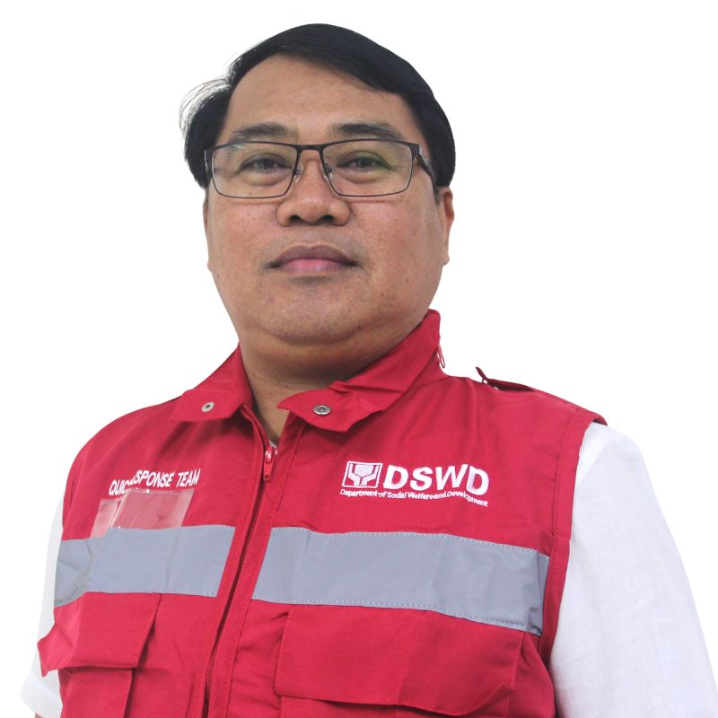
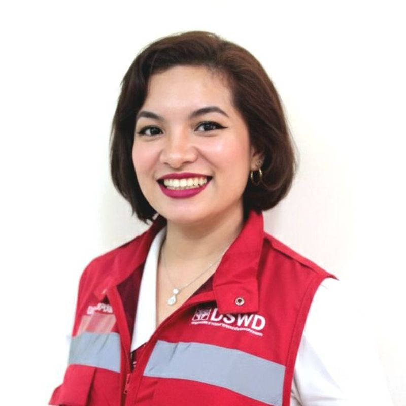

Administrative Service – Gender and Development Focal Point System Technical Working Group
CHAIRPERSON

Atty. Karina Antonnette A Agudro, MSW, CESO III
Chairperson, AS GFPS-TWG
VICE-CHAIRPERSON

William V. Garcia Jr.
Vice-Chairperson
Rhowena B. Calde
Alternate Vice-Chairperson
SECRETARIAT

Chilova Clarisse Albornoz-Barraca
Lead Secretariat

Arianne A. Carmona
Assistant Lead Secretariat
MEMBERS
Arwen Panagadato
Property, Supply and Asset Management Division

Ma. Rodelyn Paloma
Records and Archives Management Division

Jenny Peral Abedania
Building and Ground Management Division

Ronalyn Mae Paloma
Building and Ground Management Division

Micah Abara
General Services Division
Alfredo Arnesto, Jr.
General Services Division

Jen Jen Ilagan
Procurement Management Division
Jayson Lozañes
Procurement Management Division
Jesimar Osario
Administrative Service - Office of the Director